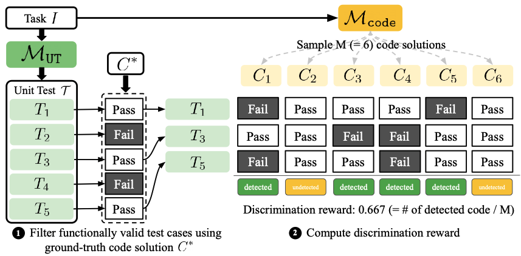
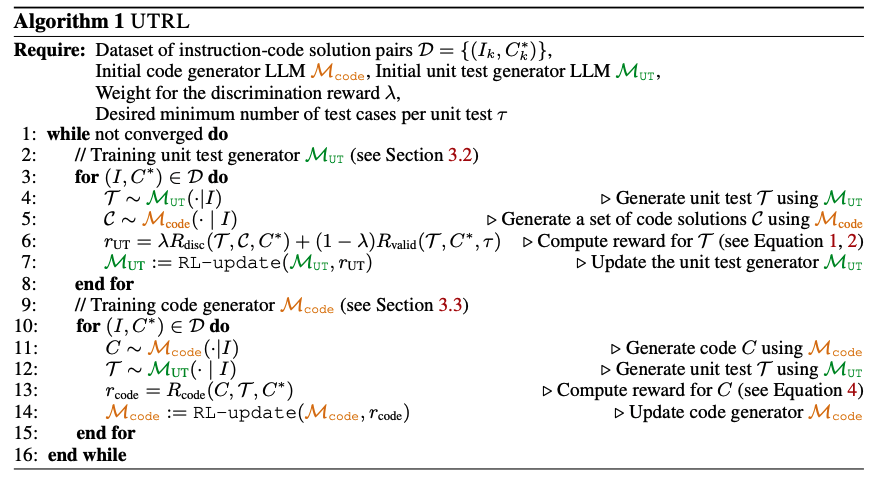
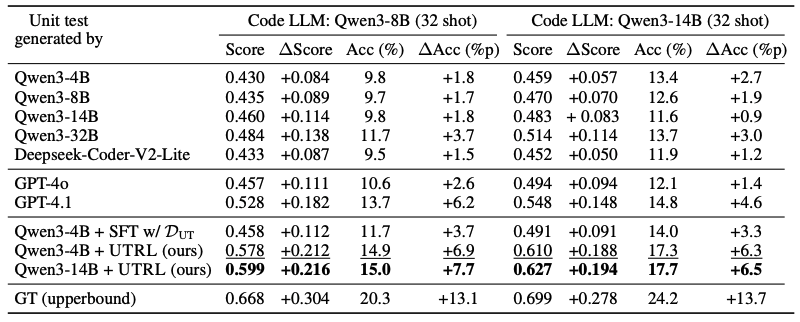
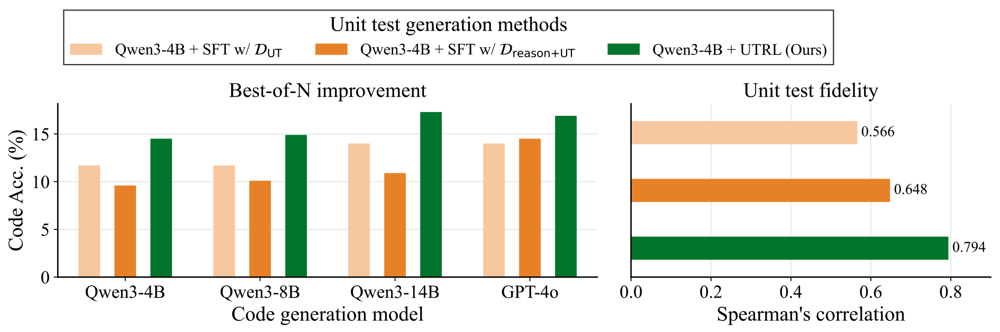
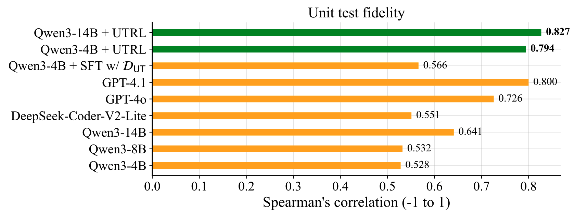
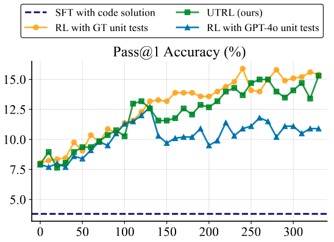
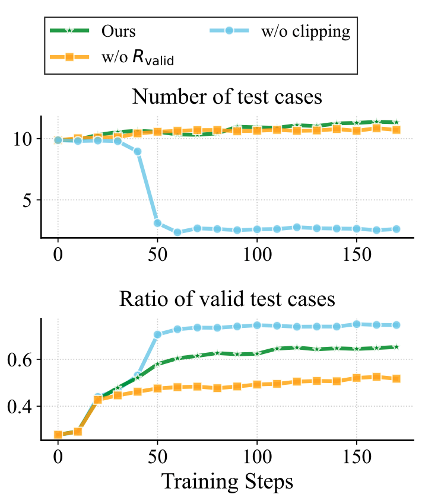
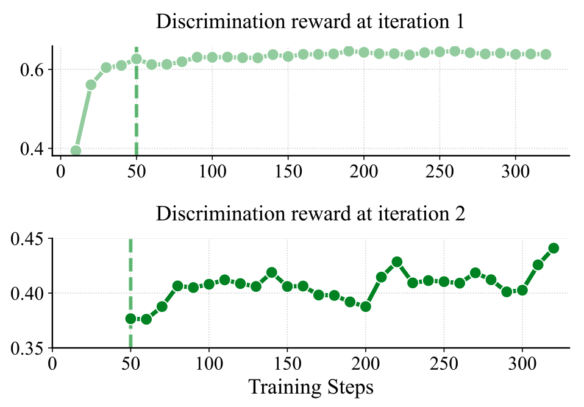

Learning to Generate Unit Test via
Adversarial Reinforcement Learning
Training an LLM to write high-quality unit tests — without any ground-truth unit test labels — by pitting a test generator and a code generator against each other in an adversarial RL loop.
01Method
Collecting high-quality unit tests at scale is expensive. Instruction–code pairs are not. UTRL leverages this asymmetry: it converts an instruction–code dataset into a training signal for unit test generation through two interlocking rewards.
R_disc · discrimination
Reward the test generator when its tests successfully flag code solutions drawn from the code generator while still passing the ground-truth code. This drives tests toward sharp, discriminative edge cases.
R_valid · validity (clipped)
Reward functional correctness of test cases, but clip the denominator at τ so the model cannot game the reward by emitting 2–3 trivial tests copied from the prompt.

The adversarial loop
The two generators alternate. Each iteration, the code generator is pushed to produce solutions harder to distinguish from ground truth, and the test generator is pushed to invent increasingly precise failure modes. Iteration 2's discrimination reward starts 25 points below iteration 1's saturation level — confirming the code generator genuinely improved — and then climbs back up as tests adapt.

02Evaluation metrics for unit tests
Evaluating a generated unit test is subtle: we want tests that are both discriminative (rank good code above bad code) and comprehensive (behave the way a rigorously curated ground-truth test suite would). We introduce two complementary metrics that probe these two axes separately.
Metric 1 · Best-of-N improvement
Quantifies the discriminativeness of the unit test.
Step 1. Sample N candidate code solutions for a given programming task.
Step 2. Use the generated unit test to select the solution that passes the most test cases.
Step 3. Evaluate the selected solution with the human-written ground-truth unit test and report code score / accuracy.
Metric 2 · Unit test fidelity
Quantifies how closely the generated test replicates GT evaluation.
Step 1. Sample N code solutions for a task.
Step 2. Score every solution twice — once with the generated test, once with the GT test — yielding two score vectors.
Step 3. Report Spearman's rank correlation between the two vectors. A higher correlation means the generated test induces the same code ranking as a comprehensive GT suite.
03Experiments
We evaluate on 945 competitive programming tasks from TACO and 511 from LiveCodeBench-v2, using the two metrics above.
Yes — and it beats frontier models. A small Qwen3-4B trained with UTRL generates unit tests that surpass GPT-4.1, GPT-4o, and SFT baselines across both evaluation axes.
- Over base model: Best-of-N code score on Qwen3-8B jumps from 0.430 → 0.578 (+34%). Code accuracy: 9.8% → 14.9%.
- Over frontier LLMs: UTRL-4B unit tests beat GPT-4.1 (0.537) and GPT-4o (0.474) — despite being 4B parameters.
- Over SFT baselines: SFT on human-written unit tests reaches 0.458 Best-of-N score, and SFT on teacher-distilled reasoning+tests still lags behind. RL generalizes where SFT memorizes.
- Unit test fidelity: UTRL-4B reaches 0.794, and UTRL-14B reaches 0.827 — both surpassing GPT-4.1 (0.800) and far above SFT-with-GT-tests (0.566).



Yes — it reaches parity with RL that uses ground-truth unit tests. The code generator trained against UTRL's evolving tests hits 15.3% pass@1, essentially matching the 15.9% upper bound from RL with human-written tests.
- RL with GPT-4o-generated tests saturates under 12%. A strong-but-static test distribution is not enough — adaptive tests are what drive continued improvement.
- SFT on ground-truth code collapses to 3.6% pass@1 on unseen eval tasks, showing that direct imitation overfits while adversarial RL generalizes.
- This means UTRL is a viable path to training code generators even in domains where high-quality unit tests are infeasible to collect.

Two different failure modes. Validity design matters at least as much as the discrimination signal itself.
- Drop R_valid entirely: the generator emits tests where >50% are functionally invalid. Discrimination reward stays high but tests are unreliable as evaluators.
- Keep R_valid but remove clipping: the generator collapses — it learns to emit only the 2–3 trivial test cases visible in the problem statement to trivially maximize the validity ratio. Coverage dies.
- Clipped validity (τ = 12): forces the model to keep producing enough tests that a high validity ratio actually reflects real reasoning effort. This is what unlocks the full curriculum.

Yes — iteration 2 produces a harder curriculum. In iteration 1, the test generator saturates against the initial code distribution. Training the code generator against those tests makes its outputs harder to distinguish from ground truth, which reopens the discrimination problem for the next iteration.
- Iteration 1 saturates. Trained against the initial code generator, the discrimination reward plateaus around 0.626 after ~50 steps with only a ~0.02 gain — the test generator has learned everything it can from easy code.
- Iteration 2 starts harder. After the code generator is updated via RL against iteration 1's tests, its outputs are substantially closer to ground truth. Re-evaluating on this new distribution, the discrimination reward drops from 0.626 to 0.375 — a real, measurable increase in difficulty.
- The test generator recovers — on a harder task. Continued training lifts the reward from 0.375 to 0.447, and the resulting iteration-2 tests yield better Best-of-N performance than iteration 1, even surpassing GPT-4.1.

Yes. UTRL transfers to Llama-3.1-8B-Instruct with only 50 training steps, lifting its unit test quality well above the instruction-tuned baseline.
- Best-of-N score on Qwen3-8B code: 0.380 → 0.494 (+30%).
- Code accuracy: 7.7% → 11.9% on Qwen3-8B, 7.8% → 11.6% on Qwen3-4B.
- The framework is not tied to a specific base model — it relies only on instruction–code pairs and a verifiable reward.
04Why this matters
Unit tests are the dominant verifiable reward in code-focused RL, but they have been a bottleneck — their curation cost limits how far we can scale RL-for-code. UTRL shows that high-quality tests can emerge from the instruction–code data we already have, via adversarial self-play. The same loop also trains a strong code generator as a byproduct.
For broader deployment, the recipe is: (i) collect instruction–code pairs (easy), (ii) run UTRL, (iii) use the resulting unit test generator as a verifier for further RL — or as a standalone code evaluator.
05Citation
@article{lee2025learning,
title = {Learning to Generate Unit Test via Adversarial Reinforcement Learning},
author = {Lee, Dongjun and Hwang, Changho and Lee, Kimin},
journal = {arXiv preprint arXiv:2508.21107},
year = {2025}
}